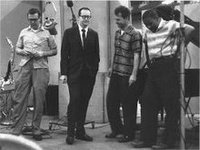

|
Dave Brubeck
|
|
Brubeck in 1964
|
|
Birth name |
David Warren Brubeck |
|
Born |
December 6, 1920
Concord, California, U.S. |
|
Died |
December 5, 2012 (aged 91)
Norwalk, Connecticut, U.S. |
|
Genres |
|
|
Occupation(s) |
- Musician
- composer
- bandleader
|
|
Instruments |
Piano |
|
Years
active |
1940s–2012 |
|
Labels |
|
|
Associated
acts |
|
|
Website |
davebrubeck.com |
David Warren Brubeck (;
December 6, 1920 – December 5, 2012) was an American jazz pianist
and composer, and one of the foremost exponents of cool
jazz. Some of his compositions have become jazz
standards, including "In
Your Own Sweet Way" and "The Duke". Brubeck's style ranged from
refined to bombastic, reflecting both his mother's classical
training and his own improvisational skills. His music employed
unusual time
signatures as well as superimposing contrasting
rhythms, meters,
and tonalities.
Brubeck most often performed
throughout his career as leader of the Dave Brubeck Quartet, which
kept its name despite shifting personnel. The most successful, and
prolific, lineup of the quartet was the one between 1958 and 1968,
which consisted of, in addition to Brubeck, saxophonist Paul
Desmond, bassist Eugene
Wright and drummer Joe
Morello. This lineup got its start touring through Europe and
Asia at the behest of the U.S.
State Department. This cultural experience inspired Brubeck to
record the 1959 album Time
Out, which featured unconventional time signatures. Despite
its esoteric theme, Time Out became
Brubeck's highest-selling album, and the first jazz album to sell
over one million copies. The lead single from the album, "Take
Five", a song written by Desmond in 5
4 time, similarly
became the highest-selling jazz single of all time.[1][2][3] The
quartet followed up Time Out with
four other albums in non-standard time signatures, and some of the
other songs from this series became hits as well, including "Blue
Rondo à la Turk" (in 9
8) and "Unsquare
Dance" (in 7
4).
Brubeck was also a composer of
orchestral and sacred music, and wrote soundtracks for television,
such as Mr.
Broadway and the animated miniseries This
Is America, Charlie Brown.
Early life and
career[edit]
Dave Brubeck was born in Concord,
California,[1] and
grew up in Ione,
California. His father, Peter Howard "Pete" Brubeck, was a cattle
rancher. His mother, Elizabeth (née Ivey), who had studied piano
in England under Myra
Hess and intended to become a concert
pianist, taught piano for extra money.[4]
Brubeck's father had Swiss ancestry
(the family surname was originally Brodbeck),
and possibly Native American Modoc lineage,[5] while
his maternal grandparents were English and German.[6][7][8] Brubeck
did not intend to become a musician (his two older brothers, Henry
and Howard,
were already on that track), but he did take lessons from his
mother. He could not read
music during these early lessons, attributing the
difficulty to poor eyesight, but "faked" his way through well enough
that his deficiency went mostly unnoticed.[9]
Planning to work with his father on
their ranch, Brubeck entered the College
of the Pacific in Stockton,
California, to study veterinary
science. He switched his major to music at the urging of the
head of zoology,
Dr. Arnold, who told him "Brubeck, your mind's not here. It's across
the lawn in the conservatory.
Please go there. Stop wasting my time and yours."[10] Later,
Brubeck was nearly expelled when one of his professors discovered
that he could not read
music on sight. Several others came forward, arguing that his
ability to write counterpoint and harmony more
than compensated, and demonstrated his skill with music notation.
The college was still concerned, and agreed to allow Brubeck
graduate only after he promised never to teach piano.[11]
After graduating in 1942, Brubeck was
drafted into the United
States Army, serving in Europe in the Third
Army. He volunteered to play piano at a Red
Cross show and was such a hit that he was spared
from combat service and ordered to form a band. He created one of
the U.S. armed forces' first racially
integrated bands, "The Wolfpack".[11] It
was in the military, in 1944, that Brubeck met Paul
Desmond.[12] After
serving nearly four years in the army, he returned to California for
graduate study at Mills
College in Oakland. He was a student of Darius
Milhaud, who encouraged him to study fugue and orchestration,
but not classical piano. While on active duty, he received two
lessons from Arnold
Schoenberg at UCLA in
an attempt to connect with high
modernist theory and practice.[13] However,
the encounter did not end on good terms since Schoenberg believed
that every note should be accounted for, an approach which Brubeck
could not accept, although according to his son Chris Brubeck, there
is a twelve-tone row in The Light in the Wilderness,
Dave Brubeck's first oratorio. In it, Jesus's Twelve Disciples are
introduced each singing their own individual notes; it is described
as "quite dramatic, especially when Judas starts singing 'Repent' on
a high and straining dissonant note".[14]
Jack Sheedy owned San Francisco-based
Coronet Records, which had previously recorded area Dixieland bands.
(This Coronet Records is distinct from the late 1950s New York-based
budget label, and also from Australia-based Coronet
Records.) In 1949, Sheedy was convinced to make the first
recording of Brubeck's octet and later his trio. But Sheedy was
unable to pay his bills and in 1949 gave up his masters to
his record stamping company, the Circle Record Company, owned by Max
and Sol Weiss. The Weiss brothers soon changed the name of their
business to Fantasy
Records.
The first Brubeck records sold well,
and he made new records for Fantasy. Soon the company was shipping
40,000 to 50,000 copies of Brubeck records each quarter, making a
good profit.[15]
Dave Brubeck
Quartet[edit]

The quartet in 1959 during the
Time Out sessions.
From left to right: Joe Morello, Paul Desmond, Dave
Brubeck, Eugene Wright.
In 1951, Brubeck damaged several neck
vertebrae and his spinal cord while diving into the surf in Hawaii.
He would later remark that the rescue workers who responded had
described him as a "DOA" (dead on arrival). Brubeck recovered after
a few months, but suffered residual nerve pain in his hands for
years after.[16] The
injury also influenced his playing style towards complex, blocky
chords rather than speedy, high-dexterity, single-note runs.
Brubeck organized the Dave Brubeck
Quartet in 1951, with Paul
Desmond on alto saxophone. They took up a long
residency at San Francisco's Black
Hawk nightclub and gained great popularity touring
college campuses, recording a series of albums with such titles as Jazz
at Oberlin (1953), Jazz
at the College of the Pacific (1953), and
Brubeck's debut on Columbia
Records, Jazz
Goes to College (1954).
When Brubeck signed with Fantasy
Records, he thought he had a half interest in the company and
worked as an A
& R promoter for the label, encouraging the Weiss
brothers to sign other contemporary jazz performers, including Gerry
Mulligan, Chet
Baker and Red
Norvo. When he discovered that all he owned was a half interest
in his own recordings, he quit to sign with another label, Columbia
Records.[17]
In 1954, he was featured on the cover
of Time,
the second jazz musician to be so honored (the first was Louis
Armstrong on February 21, 1949).[18] Brubeck
personally found this acclaim embarrassing, since he considered Duke
Ellington more deserving and was convinced that he
had been favored as a Caucasian.[19] Ellington
knocked on the door of Brubeck's hotel room to show him the cover
and Brubeck's response was, "It should have been you."[20]
Early bassists for the group included
Ron Crotty, Bob
Bates and his brother Norman
Bates; Lloyd Davis and Joe Dodge held the drum chair. In 1956
Brubeck hired drummer Joe
Morello, who had been working with Marian
McPartland; Morello's presence made possible the rhythmic
experiments that were to come. In 1958 African-American bassist Eugene
Wright joined for the group's U.S.
Department of State tour of Europe and Asia.[21] The
group visited Poland, Turkey, India, Ceylon,
Pakistan, Iran and Iraq on behalf of the U.S. Government. They spent
two weeks in Poland, giving thirteen concerts and visiting with
Polish musicians and citizens as part of the People-to-People
program.[22] Wright
became a permanent member in 1959, making the "classic" Quartet's
personnel complete. During the late 1950s and early 1960s Brubeck
canceled several concerts when the club owners or hall managers
objected to presenting an integrated band. He also canceled a
television appearance when he found out that the producers intended
to keep Wright off-camera.[23]
In 1959, the Dave Brubeck Quartet
recorded Time
Out, an album about which the record label was enthusiastic
but which they were nonetheless hesitant to release. Featuring the
cover art of S.
Neil Fujita, the album contained all original compositions,
almost none of which were in common
time: 9
8, 5
4, 3
4, and 6
4 were used, inspired
by Eurasian folk music they experienced during their 1958 Department
of State sponsored tour.[24] Nonetheless,
on the strength of these unusual time signatures (the album included
"Take
Five", "Blue
Rondo à la Turk", and "Three to Get Ready"), it quickly went Platinum.
It was the first jazz album to sell more than a million copies.[25]
Time Out was
followed by several albums with a similar approach, including Time
Further Out: Miro Reflections (1961), using
more 5
4, 6
4, and 9
8, plus the first attempt at 7
4; Countdown—Time
in Outer Space (dedicated to John
Glenn, 1962), featuring 11
4 and more 7
4; Time
Changes (1963), with much 3
4, 10
4 and 13
4; and Time
In (1966).
These albums (except Time
In) were also known for using contemporary paintings as cover
art, featuring the work of Joan
Miró on Time Further Out, Franz
Kline on Time in Outer Space,
and Sam
Francis on Time Changes.
On a handful of albums in the early
1960s, clarinetist Bill
Smith replaced Desmond. These albums were devoted
to Smith's compositions and thus had a somewhat different aesthetic
than other Brubeck Quartet albums. Nonetheless, according to critic
Ken Dryden, "[Smith] proves himself very much in Desmond's league
with his witty solos".[26] Smith
was an old friend of Brubeck's; they would record together,
intermittently, from the 1940s until the final years of Brubeck's
career.
In the early 1960s, Brubeck and his
wife, Iola, developed a jazz musical, The
Real Ambassadors, based in part on experiences they and
their colleagues had during foreign tours on behalf of the
Department of State. The soundtrack album, which featured Louis
Armstrong, Lambert,
Hendricks & Ross, and Carmen
McRae was recorded in 1961; the musical was
performed at the 1962 Monterey
Jazz Festival.
At its peak in the early 1960s, the
Brubeck Quartet was releasing as many as four albums a year. Apart
from the "College" and the "Time" series, Brubeck recorded four LP
records featuring his compositions based on the
group's travels, and the local music they encountered. Jazz
Impressions of the U.S.A. (1956, Morello's
debut with the group), Jazz
Impressions of Eurasia (1958), Jazz
Impressions of Japan (1964), and Jazz
Impressions of New York (1964) are less
well-known albums and they produced Brubeck standards such as
"Summer Song", "Brandenburg Gate", "Koto Song", and "Theme from Mr.
Broadway". (Brubeck wrote, and the Quartet performed, the theme song
for this Craig
Stevens CBS drama series; the music from the series
became material for the New York album.)
In 1961, Brubeck appeared in a few scenes of the British jazz/beat
film All
Night Long, which starred Patrick
McGoohan and Richard
Attenborough. Brubeck merely plays himself, with the film
featuring close-ups of
his piano fingerings. Brubeck performs "It's a Raggy Waltz" from the Time
Further Out album and duets briefly with bassist Charles
Mingus in "Non-Sectarian Blues".
In the early 1960s Dave Brubeck was
the program director of WJZZ-FM radio (now WEZN-FM).
He achieved his vision of an all-jazz format radio station along
with his friend and neighbor John E. Metts, one of the first African
Americans in senior radio management.
The final studio album for Columbia by
the Desmond/Wright/Morello quartet was Anything Goes (1966)
featuring the songs of Cole
Porter. A few concert recordings followed, and The
Last Time We Saw Paris (1967) was the "Classic"
Quartet's swan-song.
Members[edit]
| Years |
Lineup |
| 1951–1956 |
|
1953
(Jazz
at Oberlin) |
|
| 1956–1958 |
|
1958–1968
(Classic quartet) |
- Dave Brubeck – piano
- Paul Desmond – alto
saxophone
- Joe Morello – drums
-
Eugene Wright – double bass (also
credited "Gene Wright")
-
Additional personnel
-
Bill Smith – clarinet (subbed
for Desmond on The Riddle, Brubeck
A la Mode, and Near Myth, 1960)
|
1968–1972
("The Dave Brubeck Trio &
Gerry Mulligan") |
-
Additional personnel
- Paul Desmond – alto
saxophone (October
1972 quintet for We're All Together
Again)
|
1972–1978
("The New Brubeck Quartet") |
-
Additional personnel
- Paul Desmond – alto
saxophone (guest
soloist on some concerts)
- Gerry Mulligan –
baritone saxophone (guest
soloist on some concerts)
-
Jerry Bergonzi – tenor saxophone,
soprano saxophone (guest
soloist on some concert tours and recordings)
-
Perry Robinson – clarinet (guest
soloist on some concert tours and recordings)
-
Peter "Madcat" Ruth – harmonicas, Jaw
harp (guest
soloist on some concert tours and recordings)
-
Muruga Booker = drums, percussion (guest
soloist on some concert tours and recordings)
|
1976–1977
(Classic quartet reunion –
25th anniversary) |
- Dave Brubeck – piano
- Paul Desmond – alto
saxophone
- Joe Morello – drums
- Eugene Wright – double
bass
|
| 1977–Early 2000s |
- Dave Brubeck – piano
- Chris Brubeck – bass
trombone, electric upright bass, electric fretless bass
- Dan Brubeck – drums
- Darius Brubeck –
piano, electric piano
-
Additional personnel
- Matthew Brubeck – cello (guest
on a few sets)
-
Randy Jones – drums (guest
on some sets)
-
Bobby Militello – alto saxophone, tenor
saxophone, flute (guest,
such as 1993's Late Night Brubeck)
-
Jack Six – double bass (guest
on some sets)
-
Bill Smith – clarinet (guest,
such as 1982's Concord On A Summer Night,
1984's For Iola, 1986's Reflections,
1987's Blue Rondo, Moscow
Nights and In Moscow)
|
| 1978–1982 |
|
| Early 2000s–2012 |
|
Later career[edit]
Brubeck produced The
Gates of Justice in 1968, a cantata mixing Biblical
scripture with the words of Dr. Martin
Luther King Jr.
In 1971, the new senior management at
Columbia Records decided not to renew Brubeck's contract, as they
wished to focus on rock music. He moved to Atlantic Records.[27]
Brubeck's music was used in the 1985
film Ordeal
by Innocence. He also composed for – and performed with his
ensemble on – "The NASA Space Station", a 1988 episode of the CBS TV
series This
Is America, Charlie Brown.[28]
Personal life[edit]
Dave Brubeck married jazz lyricist
Iola Whitlock in September 1942; the couple were married for 70
years, until his death in 2012. Iola died on March 12, 2014, from
cancer in Wilton,
Connecticut, at the age of 90.[29][30]
Four of Brubeck's six children have
been professional musicians. Darius,
the eldest, is a pianist, producer, educator and performer. (He was
named after Dave Brubeck's mentor Darius
Milhaud.[31])
Dan is a percussionist, Chris is a multi-instrumentalist and
composer. Matthew,
the youngest, is a cellist with
an extensive list of composing and performance credits. Another son,
Michael, died in 2009.[16][32] Brubeck's
children often joined him in concerts and in the recording studio.
Brubeck became a Catholic in 1980,
shortly after completing the Mass To Hope which
had been commissioned by Ed Murray, editor of the national Catholic
weekly Our
Sunday Visitor. Although he had spiritual interests before
that time, he said, "I didn't convert to Catholicism, because I
wasn't anything to convert from. I just joined the Catholic Church."[33] In
1996, he received the Grammy
Lifetime Achievement Award. In 2006, Brubeck was awarded the University
of Notre Dame's Laetare
Medal, the oldest and most prestigious[34] honor
given to American Catholics, during the University's commencement.
He performed "Travellin' Blues" for the graduating class of 2006.
Brubeck founded the Brubeck Institute
with his wife, Iola, at their alma mater, the University
of the Pacific in 2000. What began as a special
archive, consisting of the personal document collection of the
Brubecks, has since expanded to provide fellowships and educational
opportunities in jazz for students, also leading to having one of
the main streets on which the school resides named in his honor,
Dave Brubeck Way.[35]
The US Library of Congress conducted a
conversation with Brubeck in April 2008: Jazz
Conversation: Pianist, Composer Dave Brubeck.
Recognition[edit]

Dave Brubeck (third from left), among
Kennedy
Center honorees 2009, flanked by
President and Mrs. Obama at the Blue Room,
White
House, December 6, 2009 (his 89th birthday)
In 1975, the main-belt asteroid 5079
Brubeck was named after Brubeck.[36]
Brubeck recorded five of the seven
tracks of his album Jazz Goes to College in
Ann Arbor. He returned to Michigan many times, including a
performance at Hill Auditorium where he received a Distinguished
Artist Award from the University
of Michigan's Musical Society in 2006. On April 8, 2008, United
States Secretary of State Condoleezza
Rice presented Brubeck with a "Benjamin Franklin
Award for Public Diplomacy" for offering an American "vision of
hope, opportunity and freedom" through his music.[37] "As
a little girl I grew up on the sounds of Dave Brubeck because my dad
was your biggest fan", said Rice.[38] The State
Department said in a statement that "as a pianist,
composer, cultural emissary and educator, Dave Brubeck's life's work
exemplifies the best of America's cultural diplomacy".[37] At
the ceremony Brubeck played a brief recital for the audience at the
State Department.[37] "I
want to thank all of you because this honor is something that I
never expected. Now I am going to play a cold piano with cold
hands", Brubeck stated.[37]
California Governor Arnold
Schwarzenegger and First Lady Maria
Shriver announced on May 28, 2008, that Brubeck
would be inducted into the California
Hall of Fame, located at The
California Museum for History, Women and the Arts. The induction
ceremony occurred December 10, and he was inducted alongside eleven
other famous Californians.[39]
In 2008 Brubeck became a supporter of
the Jazz
Foundation of America in its mission to save the
homes and the lives of elderly jazz and blues musicians, including
those who had survived Hurricane
Katrina.[40] Brubeck
supported the Jazz Foundation by performing in its annual benefit
concert "A Great Night in Harlem".[41] On
October 18, 2008, Brubeck received an honorary Doctor of Music
degree from the prestigious Eastman
School of Music in Rochester,
New York.
In September 2009, the Kennedy
Center for the Performing Arts announced Brubeck as
a Kennedy
Center Honoree for exhibiting excellence in
performance arts.[42] The
Kennedy Center Honors Gala took place on Sunday, December 6
(Brubeck's 89th birthday), and was broadcast nationwide on CBS on
December 29 at 9:00 pm EST. When the award was made, President Barack
Obama recalled a 1971 concert Brubeck had given in Honolulu and
said, "You can't understand America without understanding jazz, and
you can't understand jazz without understanding Dave Brubeck."[16]
On September 20, 2009, at the Monterey
Jazz Festival, Brubeck was awarded an honorary Doctor
of Music degree (D.Mus. honoris
causa) from Berklee
College of Music.[43]
On May 16, 2010, Brubeck was awarded
an honorary Doctor of Music degree (honoris causa) from the George
Washington University in Washington, D.C. The
ceremony took place on the National Mall.[44]
On July 5, 2010, Brubeck was awarded
the Miles
Davis Award at the Montreal
International Jazz Festival.[45] In
2010, Bruce
Ricker and Clint
Eastwood produced Dave
Brubeck: In His Own Sweet Way, a documentary about Brubeck
for Turner
Classic Movies (TCM) to commemorate his 90th
birthday in December 2010.[46]
Death and legacy[edit]
Brubeck died of heart failure on
December 5, 2012, in Norwalk,
Connecticut, one day before his 92nd birthday. He was on his way
to a cardiology appointment, accompanied by his son Darius.[47] A
birthday party concert had been planned for him with family and
famous guests.[48] A
memorial tribute was held in May 2013.[49]
The Los
Angeles Times noted that he "was one of Jazz's
first pop stars", even though he was not always happy with his fame.
He felt uncomfortable, for example, that Time had
featured him on the cover[50] before
it did so for Duke
Ellington, saying, "It just bothered me."[51] The
New York Times noted he had continued to play
well into his old age, performing in 2011 and in 2010 only a month
after getting a pacemaker,
with Times music writer Nate Chinen
commenting that Brubeck had replaced "the old hammer-and-anvil
attack with something almost airy" and that his playing at the Blue
Note Jazz Club in New York City was "the picture of
judicious clarity".[32]
In The Daily Telegraph,
music journalist Ivan Hewett wrote: "Brubeck didn't have the réclame
of some jazz musicians who lead tragic lives. He didn't do drugs or
drink. What he had was endless curiosity combined with
stubbornness", adding: "His work list is astonishing, including
oratorios, musicals and concertos, as well as hundreds of jazz
compositions. This quiet man of jazz was truly a marvel."[52]
In The Guardian,
John Fordham said "Brubeck's real achievement was to blend European
compositional ideas, very demanding rhythmic structures, jazz
song-forms and improvisation in expressive and accessible ways. His
son Chris told The Guardian "when I
hear Chorale, it reminds me of the very best Aaron
Copland, something like Appalachian Spring. There's a sort of
American honesty to it."[53] Robert
Christgau dubbed Brubeck the "jazz hero of the rock
and roll generation".[54]
The Economist wrote: "Above all they found it
hard to believe that the most successful jazz in America was being
played by a family man, a laid-back Californian, modest, gentle and
open, who would happily have been a rancher all his days—except that
he couldn't live without performing, because the rhythm of jazz,
under all his extrapolation and exploration, was, he had discovered,
the rhythm of his heart."[55]
The Concord Boulevard Park in his
hometown of Concord, California, was renamed to "Dave Brubeck
Memorial Park" in his honor. Mayor Dan Helix favorably recalled one
of his performances at the park, saying: "He will be with us forever
because his music will never die."[56]
While on tour performing "Hot
House" in Toronto, Chick
Corea and Gary
Burton completed a tribute to Brubeck on the day of
his death. Corea played "Strange
Meadow Lark", from Brubeck's album Time Out.[57]
Brubeck is interred at Umpawaug
Cemetery in Redding,
Connecticut.[58][59]
In the United States, May
4 is informally observed as "Dave Brubeck Day". In
the format most
commonly used in the U.S., May 4 is written "5/4", recalling the
time signature of "Take Five", Brubeck's best known recording.[60] In
September 2019, musicologist Stephen A. Crist's book, Dave
Brubeck's Time Out, provided the first scholarly book length
analysis of the seminal album. In addition to his musical analyses
of each of the album's original compositions, Crist provides insight
into Brubeck's career during a time he was rising to the top of the
jazz charts.[61]
A definitive biography of Brubeck, Dave
Brubeck: A Life in Time, by the British writer Philip Clark, was
published by Da
Capo Press in the US and Headline
Publishing Group in the UK on February 18, 2020.[62][63]


.jpg){kind=link}
{kind=link}
{kind=link}
{kind=link}
{kind=link}